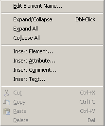

List of icons in the XML Tree Popup Menu (right-click in XML Tree)
- Edit [Name/Text/Comment] - Edit the name/comment/text of the current node depending on what type of XML node it is.
- Expand/Collapse - Expand/Collapse the current node.
- Expand All - Expand all children under the current node.
- Collapse All - Collapse all children under the current node.
Below is a screenshot of the XML Tree popup menu:
